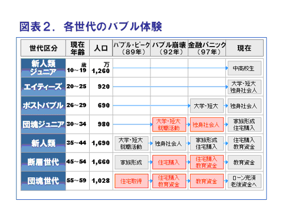
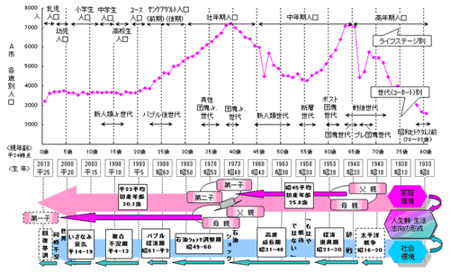

世代と購買力
質問
いつもお世話になります。
東京でコンサルタントをしている○○です。
今DM顧客を一から、絞り込みしています。
その中で世代を分けてダイレクトメールを
発送しようとしているのですが、
各世代の特徴がよくわかりません。
団塊の世代など人口が多い世代をターゲット
にしてきたと思うのですが、各世代の人数も含めて
購買対象を教えて下さい。
今回の商品は見せ方を変えれば、どの世代でも
使える商品なので迷っています。
商品はBtoC向けで、高価格になります。
何かヒントをいただけると助かります。
回答
なるほどよくわかりました。
大きな案件なので大変ですね。
◯◯さんは目の付け所が良いと思います。
確かに購買顧客の多い世代が良いというものではありません。
事実ダイレクトメールでは購買客が多い年代層の集客が
うまくいかないこともよく起こります。
まず年代別顧客層をまとめます。
その前に大きな分け目として、バブルを謳歌した世代と
バブルを知らない世代に大きな差があります。
それを踏まえて比較します。

（NSCデータベースよりのデータ http://www.nihon-toukei.co.jp/business/db/lifestage/lifestage.htm）
ライフステージ・世代（コーホート）別
人口の構成と時代背景（家庭環境＆社会環境）

（NSCデータベースよりのデータ http://www.nihon-toukei.co.jp/business/db/lifestage/lifestage.htm）
| 世代（コーホート）の特徴（抜粋） | |
| 昭和ヒトケタ世代以前 | ・受難の時代を生き抜き、高度成長を支えた世代。 ・生活律に厳しく、"モノの豊かさ"と"権威"を志向。 |
| 団塊世代 | ・戦後復興期に育ち、大学紛争や東京オリンピックを経験。 ・バブル期の財を元に"マイペース""マイホーム"生活を追求。 |
| 団塊ジュニア世代 (第２次ベビーブーム) |
・一般的｢団塊Jr.｣だが実親はプレ団塊世代中心。 ・社会不安を経験し、"自己""懐古"志向が高まる。 |
| バブル後世代 | ・元祖オタク世代である断層世代の親が中心。 ・バブル不況の記憶が薄く、節約志向から脱却。 |
（NSCデータベースよりのデータ http://www.nihon-toukei.co.jp/business/db/lifestage/lifestage.htm）
〇〇さんが今回扱う商品はどのターゲットを目的にしているのか
を考えると各世代での購入が考えられる商品です。
しかし実際に今までのデータ分析を行っていません。
まず現状を分析することから考える必要が有ります。
自社の世代別割合と日本の世代別事項割合との比較
幸いに顧客データの項目に年代があります。
まず顧客を世代別にして数値を出します。
次に日本の総人口に対しての世代別の比率を出します。
日本の世代別比率と顧客データの数をかけます。
〇〇さんの会社の世代別数が全国の世代別率に比べて
どうなっているのか調べます。
地域別男女比率と自社の地域別男女比率の比較
まず顧客の地域別（４７都道府県）男女数を出します。
次に日本の総人口に対しての地域別男女数の比率を出します。
日本の地域別男女比率と顧客の地域別男女数をかけます。
〇〇さんの会社の地域別男女数が全国の地域別男女率に比べて
どうなっているのか調べます。
この比率は毎年調べ続けると更に面白くなります。
絶対的な購買数も大切ですが地域的な購買率も考えます。
地域も参考基準に入れると、思いもよらぬ結果が出ることが有ります。
人口比率を考えて集客した場合に、購買が良い地域として
よく出てくる地域が有ります。
よく言われているのは
福岡県、熊本県、静岡県、福井県、岐阜県などです。
特に衛星都市でない地域で良い結果が出ているところがあれば
原因を突き止める必要が有ります。
そして年代別に集客を考えるときに
前提となるのがどの媒体を使うかです。
どの媒体を使うかにより反応率や集客コストが変わります。
極端に言うと通常集客コストが安いとされている媒体でも、
選んだ媒体を顧客が使っていなければ話になりません。
またお客様に向かって営業する媒体なのか、
お客様が探してこちらの媒体を見つけてもらうのかの
判断も考える必要が有ります。
一般的な考えとしてインターネットの
普及率が少ない世代の話があります。
団塊世代などはインターネット関係の反応が悪いと言われています。
しかし現実に団塊の世代のインターネット反応が悪いのか
というと若い年代層に比べると悪いことは事実です。
しかし東京や大阪、名古屋などにお住まいの団塊の世代の反応は
地方の団塊世代の反応よりも良いことが知られています。
得に東京などは顕著に結果が現れています。
団塊世代でも媒体による地域差があります。
そのため世代だけでなく媒体の他、
地域性も考えていくことが必要になります。
今回扱う商品は見せ方を変えれば
どの世代にも受け入れられる商品です。
そして今回の商品はどの世代に絞込みを行うか
を考えなければならない商品であるとも言えます。
もし今回扱う商品がある世代に特化したものであると
考えた場合には見方が変わります。
顧客層を絞るということは商品がどの世代に
一番受け入れられているかを示すものでもあります。
そして商品を企画開発したスタッフの世代も
考慮に入れると面白くなります。
世代を考えるときにはお客さんだけのことを考えるのではなく、
自社の開発販売に関わったスタッフの年代層も
考慮に入れてテストしてください。
集客を考えるときには、開発スタッフの思考が
どの世代に当たるのかを考え、開発スタッフに意見を聞くと
また違う見方ができます。
特にマーケティング部門と開発スタッフの年代差は
考慮が必要だと考えるべきです。
そして開発スタッフの年代層と営業の世代にズレが無いか
という見方も考える必要が有ります。
今回の商品の場合には年代層により販売戦略が大きく変わりますので
顧客だけの年代層だけではなく売る側の年代層も重要になります。
今回の商品はBtoC向けで、高めの価格になります。
そして商品を持つことで満足感を得られるものです。
また必需品でもありません。
今、アベノミクスと言われているときに消費する世代は、
一番人口が多い世代ではなく、バブル時期に青春であった世代と
そこから少し上の世代の消費が活発です。
そして以外に消費が伸びないのが現代の若者世代です。
固定観念を持たずにテストを繰り返してください。
他のおすすめ記事
133_DMテストの地域はどこから始めると良いか？
112_太平洋ベルト地帯の反応率
081_ライフサイクルとDM 01
110_震災以降のダイレクトメールの変化
195_2015年のDMの方向性
次の記事
208_「お客様各位」について